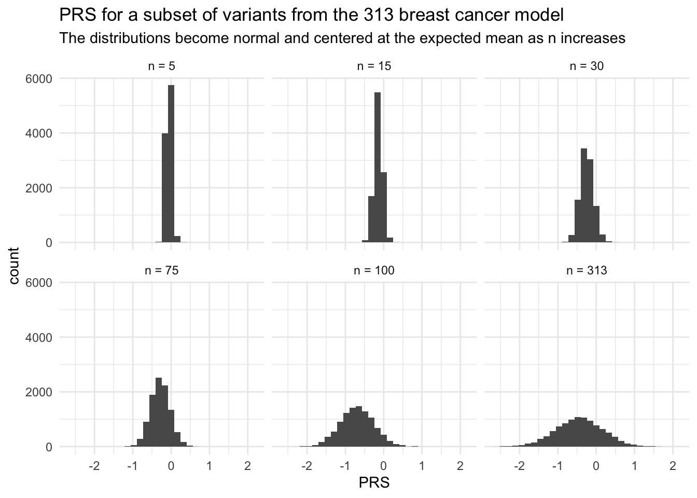

The classical CLT states that for a series of independent and identically distributed random variables \(X_1, X_2, ...\) with \(\mathbb{E}[X_i] = \mu\) and \(var(X_i) = \sigma^2 < \infty\), a finite sum of those variables \(S_n = X_1 + X_2 + ... + X_n\) will be normally distributed and centered at \(n \mu\). Formally, we can write the CLT as follows: \[
\frac{S_n - n \mu}{\sigma \sqrt{n}} \to^D \mathcal{N}(0,1)
\] where \(\to^D\) indicates convergence in distribution.
There exist several other versions of the CLT that relax the assumptions of independence and/or identical distribution of the random variables. In this demonstration, we consider random variables that are independent but not identically distributed, effectively demonstrating Lyapunov’s CLT, which does not require the random variables to be identically distributed.
Lyapunov’s CLT
Lyapunov’s CLT relaxes the assumption that the random variables are identically distributed. It states that for a sequence of independent random variables \(X_1, X_2, ...\), if the \((2+\epsilon)^{th}\) moment (for \(\epsilon > 0\)) exists, and \(\mathbb{E}[X_i] = \mu_i < \infty\) and \(var(X_i) = \sigma_i^2 < \infty\), we define
\[
r_n^{2+\epsilon} = \sum_{i=1}^{n} \langle \lvert x_i - \mu_i \rvert ^{2+\epsilon} \rangle
\]\[
s_n^2 = \sum_{i=1}^n \sigma_i^2
\] then if
\[
\lim_{n \to \infty} \frac{r_n}{s_n} = 0
\] then the CLT holds.
Polygenic Risk Scores
To predict someone’s risk of cancer, statisticians can use a polygenic risk score (PRS) to identify individuals with a high genetic risk of cancer who may benefit from early or extra monitoring. A PRS is a weighted sum of harmful (or protective) genetic variants that may increase (or decrease) someone’s risk of disease. Formally, we define a PRS as follows: \[
PRS = \sum_{i=1}^{n} \beta_i G_i
\] where \(\beta_i\) is the effect weight (i.e. effect size) and \(G_i \in\{0,1,2\}\) is the genotype for \(i = 1,...,n\) genetic variants.
By construction, \(G_i\) are independent (i.e. we only include independent alleles, which we know by calculating their linkage disequilibrium scores), and they have finite mean and variance:
However, the genotypes are not identically distributed: \[
G_i \sim Bin(2,p_i)
\] where \(p_i \in[0,1]\) is the frequency of the \(i^{th}\) effect allele.
Notice that the PRS meets the assumptions of independence and finite mean and variance, but the random variables are not identically distributed. Since the \((2+\epsilon)^{th}\) moment is difficult to obtain, we will explore the behavior of the PRS through simulation. We consider a series of PRS for various common cancers that have a different number of risk alleles included in the PRS (\(n\)). Typically, we calculate PRS on real people’s genotype data, but for the sake of privacy, we will simulate data based on the allele frequencies provided for each PRS.
Simulated PRS: Simple to complex
PRS are publicly available via the PGS Catalog. The typical PGS ‘scorefile’ (shown below for thyroid cancer) includes enough information to identify a specific variant (e.g. rsID or chromosome number and position), an indication of which allele is the effect allele and which is not (i.e. the ‘other’ allele) for purposes of cross-checking in the event of genotyping complexity (e.g. strand-flipping or multi-allelic variants), and the effect size estimate (\(\hat{\beta_i}\)). Some scorefiles also contain information about how common the effect allele is, which is useful for inferring ambiguous SNPs, and required for simulating genotypes.
As we showed above, \(G_i \sim Bin(2,p_i)\) where \(p_i \in[0,1]\) is the frequency of the effect allele, so we can use the empirical effect allele frequency to simulate \(G_i\) for a large number of individuals (N = 10,000). Then we will calculate the PRS using the formula above and check out the distribution to see if it is roughly normal. Let’s begin with a relatively simple PRS.
Thyroid cancer
Thyroid cancer ranks as ~13th most common cancer in the U.S., with ~44,000 new cases predicted for 2024.1 Graff et al. (2021)2 developed a relatively simple PRS for thyroid cancer (PGS000087) that only includes 12 variants:
Show the code
# Define function to make nice tablemake_table <-function(PGS_ID) {# Read in scorefile for the PRS scorefile <-read_csv(here("data",paste0(PGS_ID,"_scorefile.csv")))# Reformat to make pretty table scorefile_pretty <- scorefile %>%mutate(effect_weight =round(effect_weight, 4)) %>%rename(Chr = chr_name,Position = chr_position,'Effect allele'= effect_allele,'Other allele'= other_allele,'Effect weight'= effect_weight,'Effect allele freq.'= allelefrequency_effect)return(datatable(scorefile_pretty, options =list(pageLength =25)))} # Make table for thyroid PRSPRS_id_thyroid <-"PGS000087"make_table(PRS_id_thyroid)
Show the code
# Define function to simulate PRSsim_PRS <-function(PGS_ID, N_sim, subset =NA) {# Load scorefile for PRSscorefile <-read_csv(here("data",paste0(PGS_ID,"_scorefile.csv")))# If we want to subset the PRS variants randomly, do it hereif (is.na(subset) ==FALSE) { inds <-sample(1:dim(scorefile)[1],subset) scorefile <- scorefile[inds,]}# Simulate genotypes for each SNPdata <-mapply(rbinom, prob = scorefile$allelefrequency_effect, MoreArgs =list(n = N_sim, size =2))# Check that data were simulated correctly:# colMeans(data)/2 - scorefile$allelefrequency_effect# Calculate PRSPRS <-colSums(t(data)*scorefile$effect_weight)return(PRS)} # end sim_PRS function# calculate expected mean and variance of PRS (assuming beta_hat = beta)calc_exp_mean_var <-function(PGS_ID) {# Load scorefile for PRSscorefile <-read_csv(here("data",paste0(PGS_ID,"_scorefile.csv")))p <- scorefile$allelefrequency_effectbeta <- scorefile$effect_weightmu <-sum(2*beta*p)sigmasq <-sum(2*(beta)^2*p*(1-p))return(list(mu = mu, sigmasq = sigmasq))}# function to make pretty PRS plotplot_PRS <-function(PRS_scores, mu =NA) { PRS_df <-data.frame(PRS = PRS_scores) plot <- PRS_df %>%ggplot(aes(x = PRS)) +# geom_histogram() +geom_density() +theme_minimal()return(plot)}# Simulate PRS for thyroid# Number of individuals to simulate genotypes forN_sim <-10000# nvar = 12PRS_thyroid <-sim_PRS(PRS_id_thyroid, N_sim)# Calc expected mean and varPRS_thyroid_exp =calc_exp_mean_var(PRS_id_thyroid)# Plot distribution of betasscorefile_thyroid <-read_csv(here("data",paste0(PRS_id_thyroid,"_scorefile.csv")))hist(scorefile_thyroid$effect_weight, xlab ="Effect weight", main ="Histogram of thyroid cancer PRS effect weights")
Show the code
# Calculate summary statisticsPRS_thyroid_mn <-mean(PRS_thyroid)PRS_thyroid_var <-var(PRS_thyroid)# Plot PRS h <-hist(PRS_thyroid, breaks=30, xlab ="PRS", main ="Simulated PRS for thyroid cancer")xfit <-seq(min(PRS_thyroid), max(PRS_thyroid),length=40)yfit <- N_sim/5*dnorm(xfit, mean =mean(PRS_thyroid), sd =sd(PRS_thyroid)) lines(xfit,yfit)
Lung cancer
Lung cancer is the number one cause of cancer deaths. This lung cancer PRS (PGS000740), developed by Hung et al. (2021),3 has 128 genetic variants. This histogram looks even more symmetric and is becoming more normal.
Show the code
# nvar = 128PRS_id_lung <-"PGS000740"PRS_lung <-sim_PRS(PRS_id_lung, N_sim)# Plot distribution of betasscorefile_lung <-read_csv(here("data",paste0(PRS_id_lung,"_scorefile.csv")))hist(scorefile_lung$effect_weight, xlab ="Effect weight", main ="Histogram of lung cancer PRS effect weights")
Show the code
# Calc expected mean and varPRS_lung_exp =calc_exp_mean_var(PRS_id_lung)# Calculate summary statisticsPRS_lung_mn <-mean(PRS_lung)PRS_lung_var <-var(PRS_lung)# Plot PRS h <-hist(PRS_lung, breaks=30, xlab ="PRS", main ="Simulated PRS for lung cancer")xfit <-seq(min(PRS_lung), max(PRS_lung),length=40)yfit <- N_sim/10*dnorm(xfit, mean =mean(PRS_lung), sd =sd(PRS_lung)) lines(xfit,yfit)
Breast cancer
Finally, let’s look at the breast cancer PRS developed by Mavaddat et al. (2019).4 This PRS (PGS000004) contains 313 variants. The distribution of this PRS looks very normal!
Show the code
# nvar = 313PRS_id_breast <-"PGS000004"PRS_breast <-sim_PRS(PRS_id_breast, N_sim)# Plot distribution of betasscorefile_breast <-read_csv(here("data",paste0(PRS_id_breast,"_scorefile.csv")))hist(scorefile_breast$effect_weight, xlab ="Effect weight", main ="Histogram of breast cancer PRS effect weights")
Show the code
# Calc expected mean and varPRS_breast_exp =calc_exp_mean_var(PRS_id_breast)# Calculate summary statisticsPRS_breast_mn <-mean(PRS_breast)PRS_breast_var <-var(PRS_breast)# Plot PRS h <-hist(PRS_breast, breaks=30, xlab ="PRS", main ="Simulated PRS for breast cancer")xfit <-seq(min(PRS_breast), max(PRS_breast),length=40)yfit <- N_sim/5*dnorm(xfit, mean =mean(PRS_breast), sd =sd(PRS_breast)) lines(xfit,yfit)
If you’re like me and skeptical that all of these PRS were too beautiful (i.e. normal) especially when the number of genetic variants was small (!!), then I’ll demonstrate the CLT by subsampling a random set of variants from the 313 breast cancer PRS.
Show the code
# Repeat with different number of variantssubsets <-c(5, 15, 30, 75, 150, 313)subset_labels <-as_labeller(c('5'="n = 5", '15'="n = 15", '30'="n = 30", '75'="n = 75", '150'="n = 100", '313'="n = 313"))PRS_breast_subset <-mapply(sim_PRS, subset = subsets, MoreArgs =list(PGS_ID = PRS_id_breast, N_sim = N_sim))PRS_breast_subset_df <-data.frame(PRS =as.vector(PRS_breast_subset))PRS_breast_subset_df$n_var <-rep(subsets,each = N_sim)# PlotPRS_breast_subset_df %>%ggplot() +geom_histogram(aes(x = PRS)) +facet_wrap(vars(n_var), labeller = subset_labels) +theme_minimal() +labs(title ="PRS for a subset of variants from the 313 breast cancer model",subtitle ="The distributions become normal and centered at the expected mean as n increases")

Summary and importance
Notice that the shape of the PRS curves became more normal as the number of variants increased. Additionally, is ~ normal with mean and sd similar to what we would expect under the CLT! This is because of the additive nature of the PRS. In research, we rely on this predictable behavior of the PRS to simulate PRS for reference populations when those individuals do not have genotpye data available.